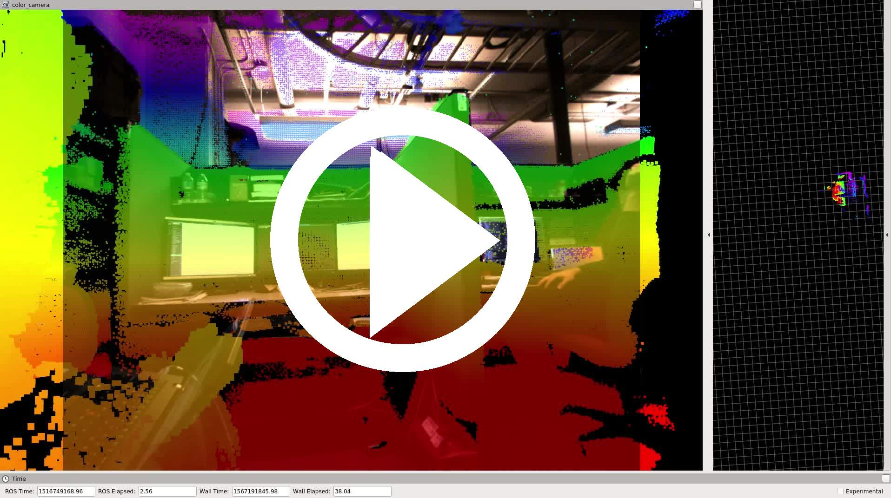
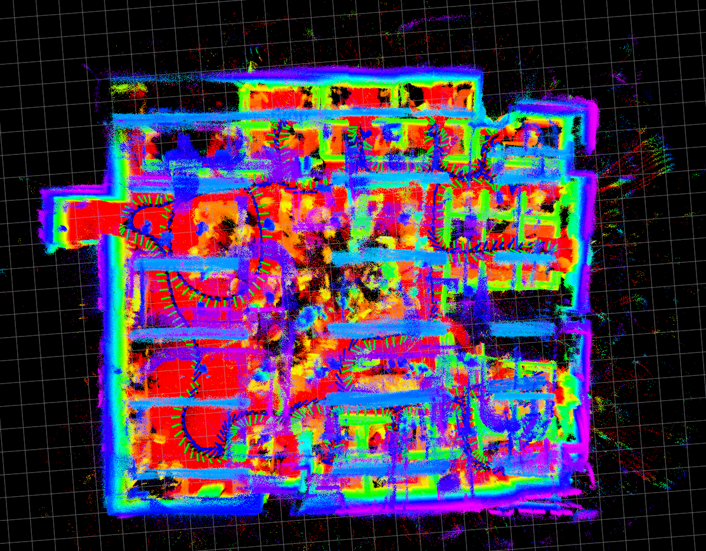
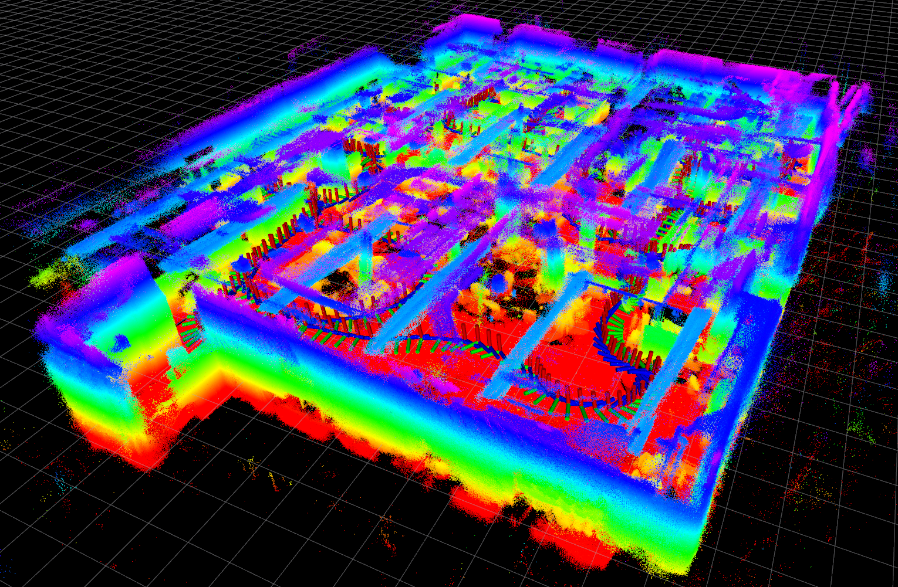
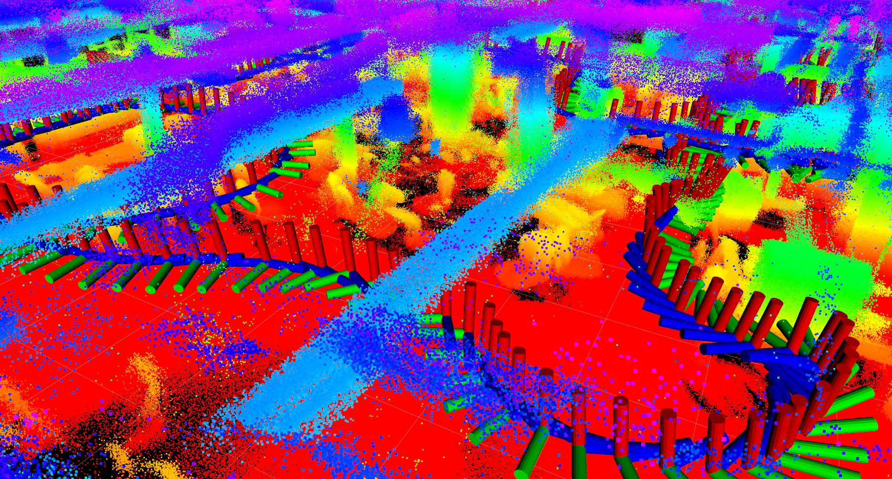
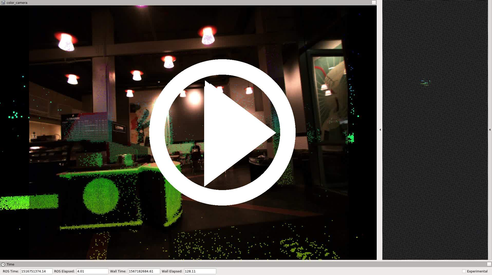
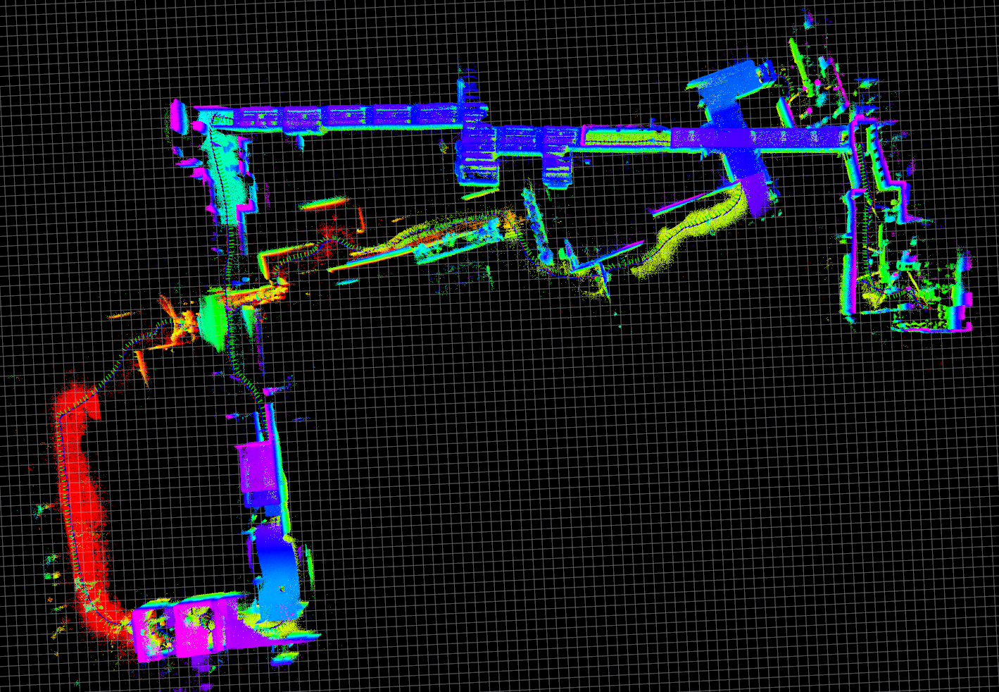
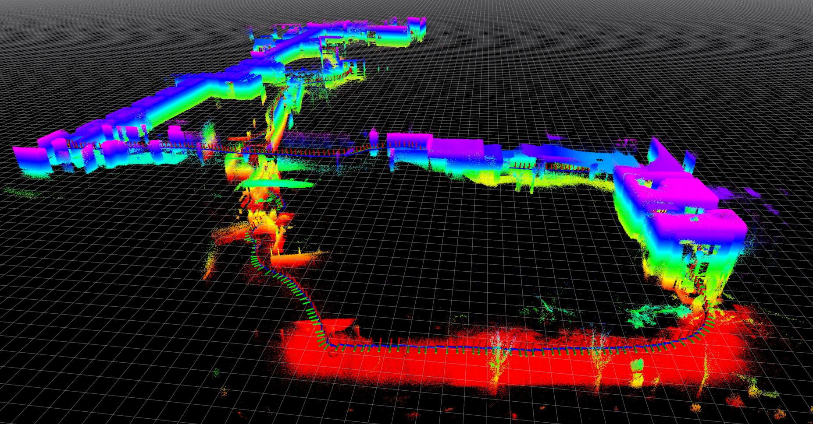
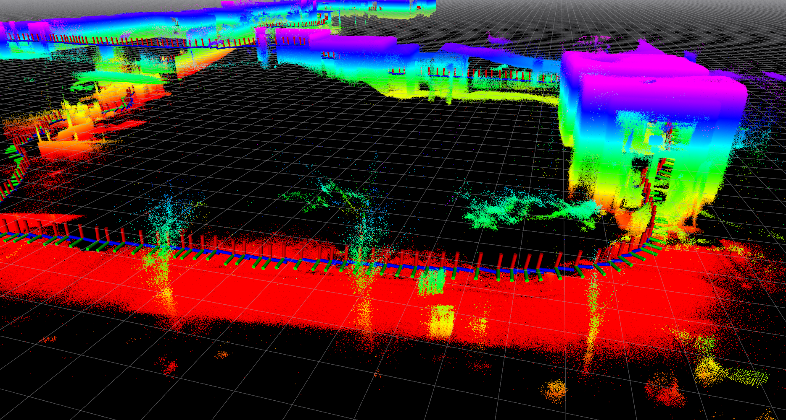

2018-01-23
2018-01-23-18-12-42
| Trip through the main GRASP lab at 403 Levine Hall. This space is also recorded in sequences 2018-1-16-16-18-11, 2018-02-28-20-04-10, and 2018-03-02-08-06-10 for detecting scene changes. | ||
|  | ||
|  |  |  |
| sensor rig: Falcam | location: Levine | |
| duration: 272s | ||
| approx path length: 129m | altitude difference: 0.66m | |
| median/maximum velocity: 0.49 / 0.85 m/s | median/maximum angular velocity: 0.41 / 1.58 rad/s | |
| environment: indoors | lighting: artificial | tags: no |
| rosbag with raw data (27Gb) | tar file with calibration and launch files | rosbag with odometry (48Mb) |
2018-01-23-18-49-29
| Long trip: E-Cafe, Towne, Skirkanich, Moore, outdoors, Skirkanich, courtyard, and back. Very little outdoors lighting. | ||
|  | ||
|  |  |  |
| sensor rig: Falcam | location: Levine | |
| duration: 381s | ||
| approx path length: 299m | altitude difference: 3.49m | |
| median/maximum velocity: 0.86 / 1.48 m/s | median/maximum angular velocity: 0.15 / 1.21 rad/s | |
| environment: indoors/outdoors | lighting: artificial | tags: no |
| rosbag with raw data (38Gb) | tar file with calibration and launch files | rosbag with odometry (68Mb) |